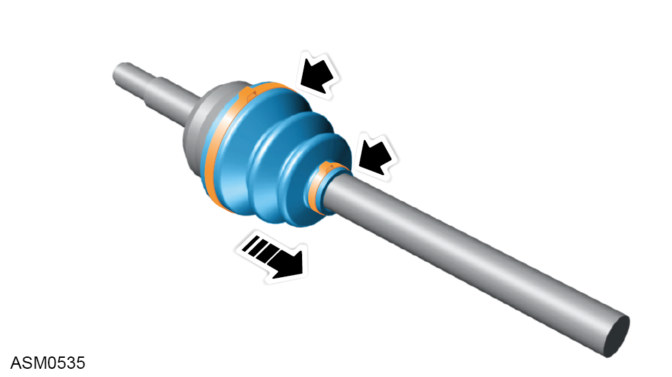
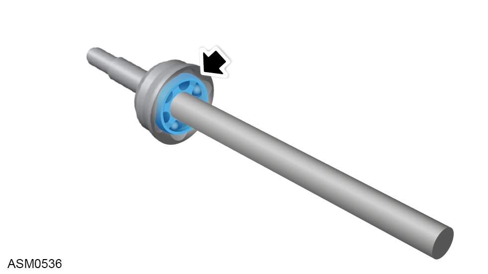

CV Joint and Shaft Assembly - Left Side - V6
Print
Operation Code: 47.15.09-02
Removal
- Remove CV joint inboard gaiter. Refer to procedure.

- Remove clips (x2) securing CV joint gaiter to driveshaft and remove or pull gaiter away from CV joint.

- Clean CV joint spider and degrease using suitable solvent.
NOTE: Inspect condition of grease for contamination before cleaning.
NOTE: Inspect the spider bearings for any significant wear within the driving surface. Discard and replace if necessary.
Installation
- Installation is the reverse of removal procedure except for the following:
- If necessary renew outboard CV joint and driveshaft assembly.